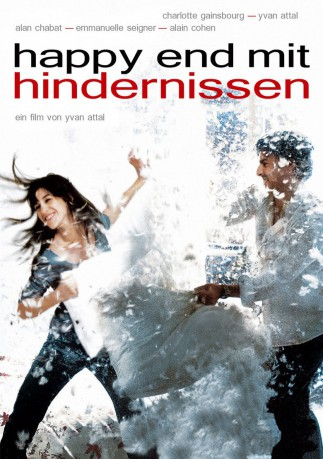

#6858 Happy End mit Hindernissen
 
 IMDB-Wertung: 6.6 / 10
IMDB-Wertung: 6.6 / 10  Metascore: 0
Metascore: 0 
Drei Herren aus Paris, alle um die 40 Jahre alt und in ihren jeweiligen Beziehungssituationen unzufrieden, sind dicke Freunde. Hotelmanager Georges ist nur seines schulpflichtigen Sohnes wegen noch immer mit der zänkischen Zicke Nathalie verheiratet. Vincent dagegen liebt seine Frau Gabrielle - und leider auch alle anderen Frauen. Fred, der Playboy, ist unverheiratert und erlebt die Affären, von denen Georges und Vincent träumen. In Wahrheit aber sehnt er sich nach einer dauerhaften Beziehung.
Jahr: 2004
Dauer: 104 Minuten
FSK: 12
Land: Frankreich Studio: Alive Vertrieb und MarketingTonspuren:
Untertitel:
Auflösung: 1080p (1920x816) Größe: 8468 MB
Genre: Drama, Musik, Komödie
Regisseur: Yvan Attal
Drehbuch: Yvan Attal
Soundtrack:
Darsteller:
 Johnny Depp als L'inconnu
Johnny Depp als L'inconnu Charlotte Gainsbourg als Gabrielle
Charlotte Gainsbourg als Gabrielle Yvan Attal als Vincent
Yvan Attal als Vincent- Alain Cohen als Fred
 Alain Chabat als Georges
Alain Chabat als Georges Emmanuelle Seigner als Nathalie
Emmanuelle Seigner als Nathalie- Kitu Gidwani als Mme Gibson
- Jérôme Bertin als Le client du garage
 Keith Allen als L'homme de la piscine
Keith Allen als L'homme de la piscine Aurore Clément als La mère de la maîtresse de Vincent
Aurore Clément als La mère de la maîtresse de Vincent- Anouk Aimée als La mère de Vincent
- Claude Berri als Le père de Vincent
- Sébastien Vidal als Thibault
- Chloé Combret als Chloé
- Christiane Oui-Oui als La femme de chambre
- Carolina Gynning als Zoé
- Ben Attal als Joseph
- Sujay Sood als M. Gibson
- Ruben Marx als Antoine
- Christine Paillard als
- Angie David als La maîtresse
- Sarah Delorme als Ludivine, la lycéenne
- Gary Cowan als
- Marie-Sophie Wilson als Florence
- Stéphanie Murat als Géraldine
- Marie Masciangelo als
Datei: X:\2004(G-M)\Happy End mit Hindernissen (2004, FSK12, 1920x816).mkv seit 04.09.2017
Festplatte: HD 2003-2004-2005(A-F)
 Es gibt insgesamt 41 Filme in der Gruppe '2004(G-M)'
Es gibt insgesamt 41 Filme in der Gruppe '2004(G-M)'